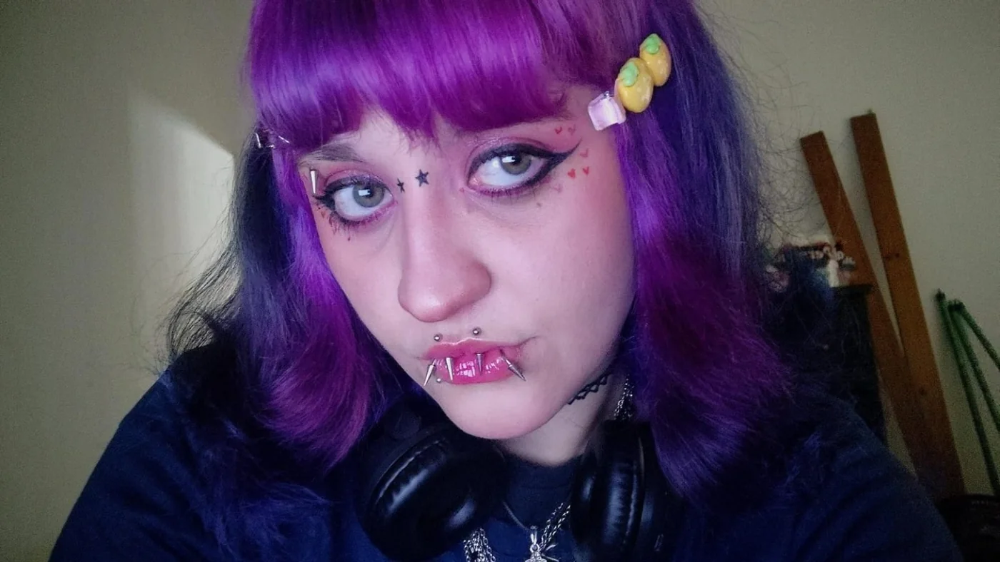

25 . 11 . 2026
uma surpresa só sua
Oi, July.
Hoje, o universo tem um motivo a mais para celebrar.
Coloque os fones, se quiser. Explore no seu ritmo. ♡
feito com carinho, para você.
uma surpresa só sua
Hoje, o universo tem um motivo a mais para celebrar.
Coloque os fones, se quiser. Explore no seu ritmo. ♡
feito com carinho, para você.
Você deu mais uma volta ao redor do Sol.
Hoje não é sobre ser perfeita, ter tudo resolvido ou saber exatamente para onde ir. É sobre celebrar cada versão sua — e todas as que ainda estão por vir.

Ela pode ser calma como a lua, intensa como uma tempestade e colorida como o céu depois da chuva.
Há coisas que só fazem sentido quando a gente conhece todos os lados de alguém. Toque nas estrelas. Cada uma guarda um pedacinho seu.
Existe uma garota que ama coelhinhos, fica feliz com pequenas coisas e tem um jeitinho doce até quando tenta parecer brava. Ela sorri com os olhos, fica toda nervosinha quando recebe um elogio e consegue transformar momentos simples em lembranças especiais. Essa garota é você, July.
Até as estrelas mais diferentes podem pertencer à mesma constelação. ✦
Você é oficialmente uma das poucas pessoas capazes de combinar coelhinhos e terror psicológico no mesmo universo.
E eu acho isso maravilhoso. ♡Azul, vermelho, roxo, verde... é impossível escolher uma cor só para uma pessoa que transforma até o próprio cabelo em arte.
Ela muda de cor, experimenta novos estilos e nunca deixa de ser inteiramente ela.
O segredo nunca foi a cor do cabelo. Sempre foi a pessoa por trás de cada uma delas.
Escrevi algumas palavras para te acompanhar no começo desse novo capítulo. Não é um manual de como viver. É só um lembrete de quanto você importa.
Essa parte é pra ler sem pressa. ♡
Seus 20 anos começam agora. Que venham descobertas, oportunidades, novos lugares, muitos desenhos e pequenas alegrias que façam seu coração sorrir.
Toque na chama para apagar sua velinha. ✨
Que a vida seja gentil com você. E que, mesmo nos dias difíceis, você nunca esqueça que merece viver coisas muito, muito bonitas.
Você é uma pessoa extraordinária. Feliz 20 anos, July. 💙